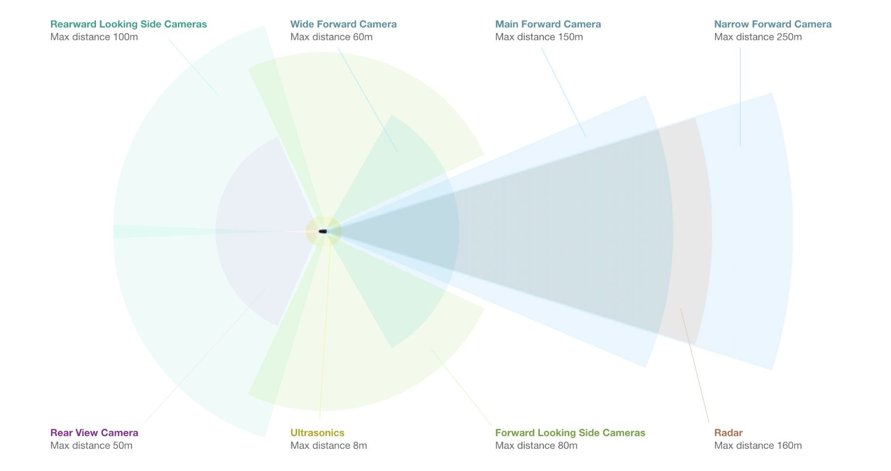
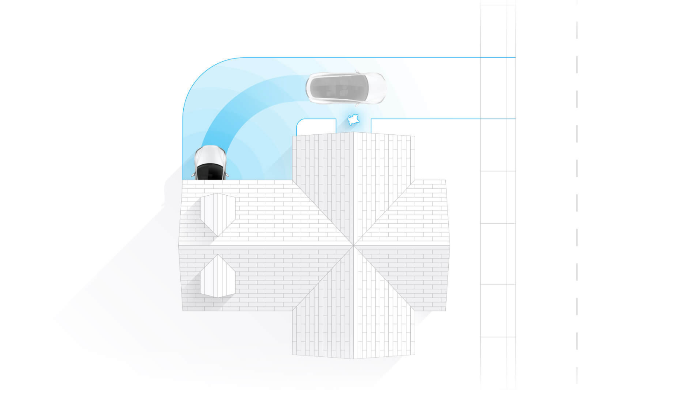

All of Tesla's products are equipped with its self-driving hardware.
Eight surround cameras provide a 360 degrees of visibility around the car
at up to 250 metres of range. Twelve updated ultrasonic sensors complement
this vision, allowing for detection of both hard and soft objects. A forward-facing radar with enhanced
processing provides additional data about the world on a redundant wavelength
that is able to see through heavy rain, fog, dust and even the car ahead. With this system the car is able to predict
any dangerous situation incoming before the driver can even see what is going on.
Enhanced Autopilot adds these new capabilities to the Tesla autopilot driving experience. The car matches speed to traffic conditions,
keeps within a lane, automatically changes lanes or motorway without requiring input of the driver,
exits the motorway when your destination is near, self-parks and can be ordered to and from your garage.
Once on the way, the Tesla determines which lane you need to be in and when. In addition to ensuring that you will reach your intended exit,
Autopilot watches for opportunities to move to a faster lane when there is a lot of traffic. When reaching the exit,
your Tesla leaves the motorway, slows down and gives control back to you.
All you need to do is getting into your car and telling it where to go. If you do not say anything, your car will look at your calendar, driving you then to
the assumed destination. Your Tesla will figure out the optimal route, navigating through urban streets, complex intersections and motorways.